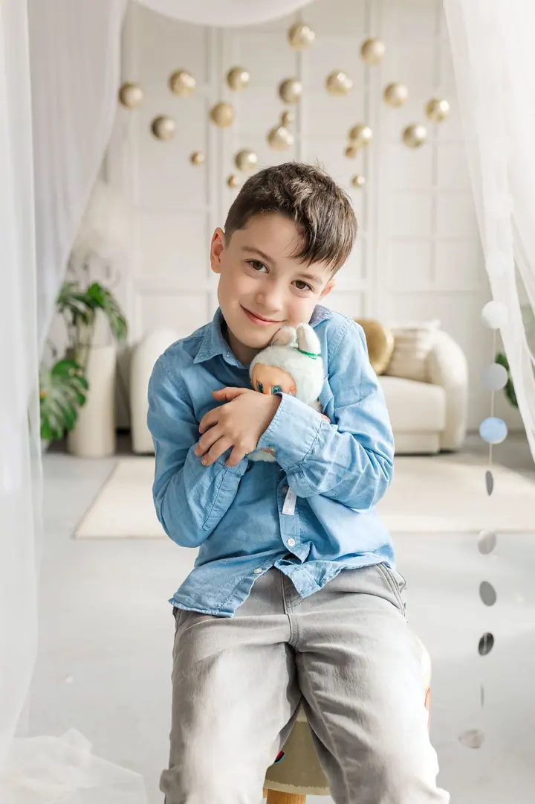
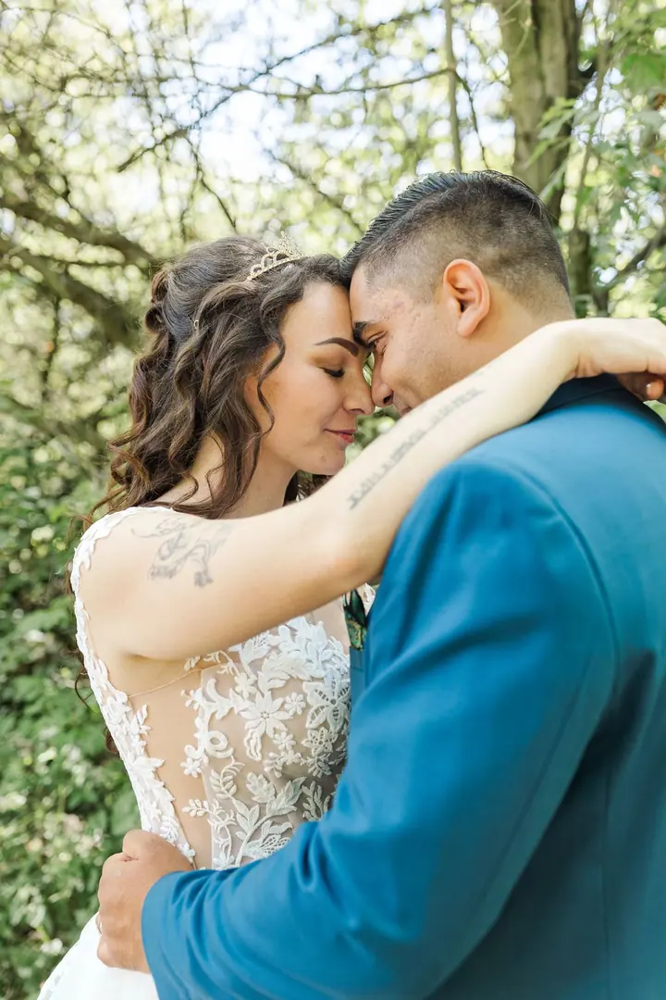
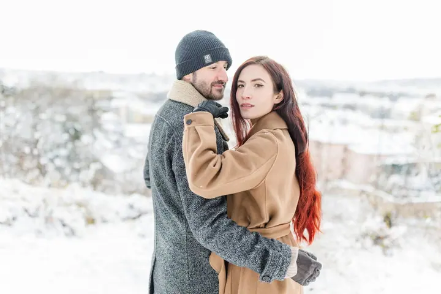
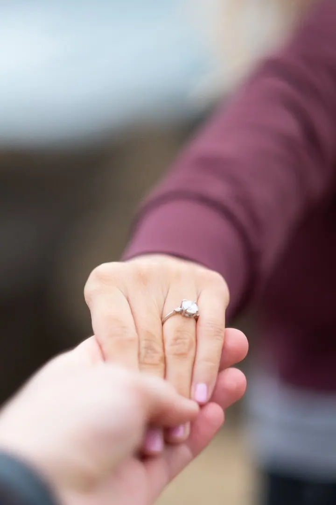
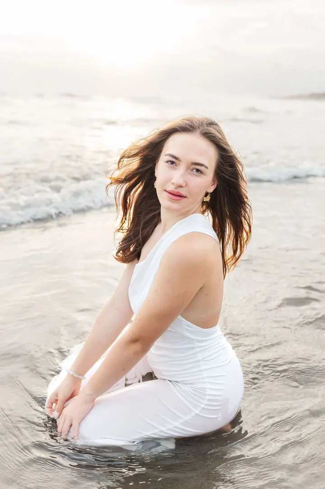

Svatební focení
Ke svatbám přistupuji s láskou a pokorou. Vyberete si ze tří balíčků od 4 do 12 hodin focení, nebo vám připravím balíček na míru. Na přání vám zajistím i svatební video.





Jmenuji se Martina Meruňková a fotím svatby, páry i rodiny v Praze a kdekoli po České republice. Dlouho jsem pracovala jako svatební koordinátorka, takže dobře vím, co páry během svatebního dne potřebují.
Více o mně
„Svatba rychle uteče, děti nám vyrostou, ale vzpomínky zůstanou napořád.“
— Martina Meruňková
Ke svatbám přistupuji s láskou a pokorou. Vyberete si ze tří balíčků od 4 do 12 hodin focení, nebo vám připravím balíček na míru. Na přání vám zajistím i svatební video.
Focení venku formou procházky nebo v interiéru. Nejde mi jen o strojené fotky, takže se u focení klidně můžete i zasmát a zablbnout.
Uvolněné focení ve dvou, třeba před svatbou nebo před porodem. Poradím vám, kam se postavit, a zbytek necháme na vás dvou.
Osobní portrétní focení venku i v interiéru. Z fotek si sama vyberete až 20, které vám upravím a pošlu do online galerie.
Fotografie jsou ilustrační
Než jsem se začala naplno věnovat fotografování, měla jsem za sebou léta práce svatební koordinátorky. Díky tomu se na svatbě cítím jako doma: vím, kdy co přijde, kde se může něco zdržet a jak udržet den v klidu. Po seznámení s každým párem spolu projdeme harmonogram a ráda vám poradím, aby celý den proběhl hladce.
Při focení vás nenechám stát strnule před objektivem. Přirozeně vás povedu, poradím, kam se postavit nebo co dělat, a pak už se snažím zachytit hlavně vaše opravdové emoce a to, jak se k sobě máte. Každou fotku, kterou vám odevzdám, upravuji zvlášť: světlo, barvy, kontrast i pleťové tóny, aby celá galerie působila jednotně a přirozeně.
Kromě svateb fotím páry, ženské portréty a rodiny, venku na procházce i v interiéru. Za focením cestuji po celé České republice i do zahraničí. Svatba rychle uteče a děti vyrostou, ale fotky vám ty chvíle připomenou ještě po mnoha letech.
Pošlete mi přes formulář datum, místo a pár informací o vaší představě. Na zprávy obvykle odpovídám do 24 hodin v pracovních dnech.
Když mám termín volný, pošlu vám nabídku. Rezervace platí po podpisu smlouvy a zaplacení rezervační zálohy.
Po seznámení spolu projdeme program dne. Jako bývalá svatební koordinátorka vám ráda poradím, aby všechno proběhlo hladce.
Každou fotku upravím a pošlu vám ji do soukromé online galerie, kde si ji můžete prohlížet, sdílet a stáhnout. Ukázku se snažím poslat dřív.
Nemusíte. Během focení vás budu přirozeně vést a poradím vám, kam se postavit nebo co dělat. Chci, aby fotky zachytily vaše skutečné emoce.
Déšť není překážka. Můžeme využít interiér, zastřešené místo nebo krátkou přestávku mezi přeháňkami. Deštivé počasí navíc často vytvoří jemnou, romantickou atmosféru.
Ano, za svatbami cestuji po celé České republice i do zahraničí. Případné cestovní náklady vám vždy řeknu předem spolu s cenovou nabídkou.
Ano. Můžete si objednat samotné fotografování, svatební video nebo společný balíček fotografií a videa. Všechno spolu předem naplánujeme podle programu a vašich představ.